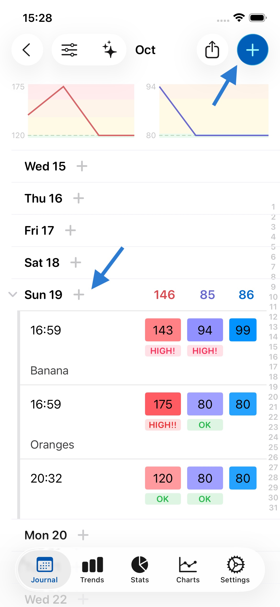
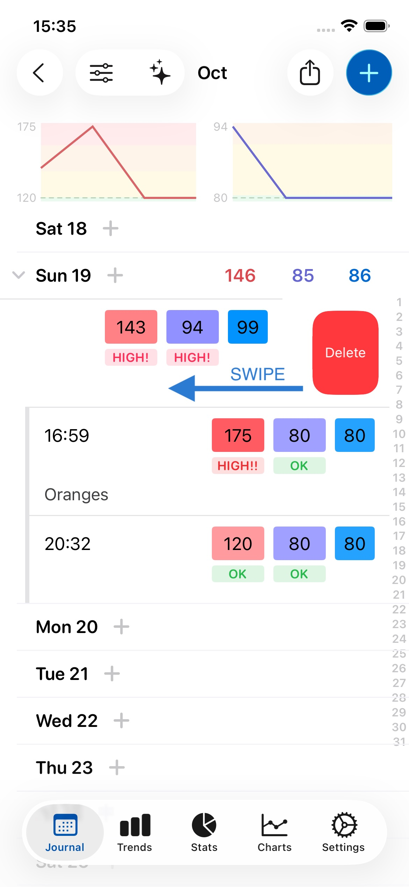
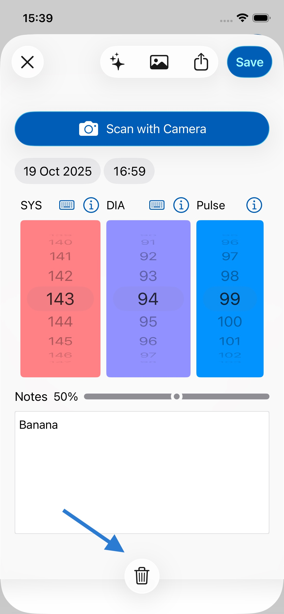
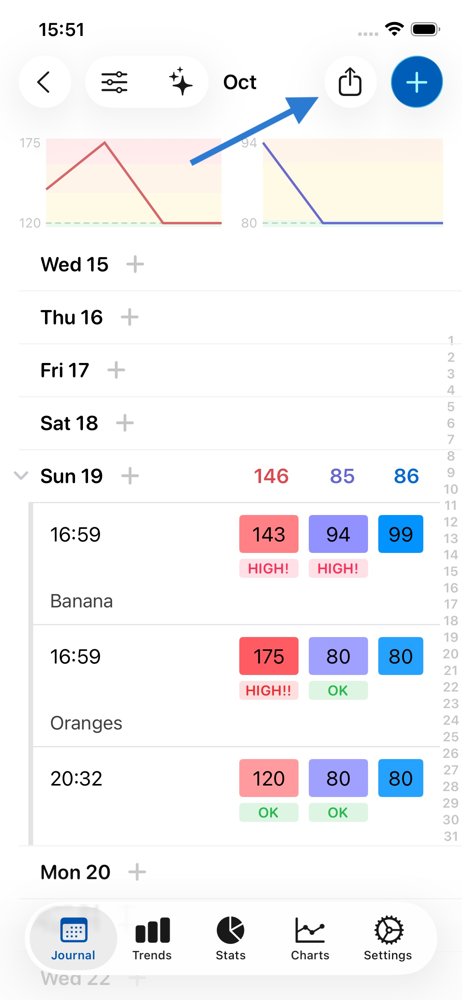
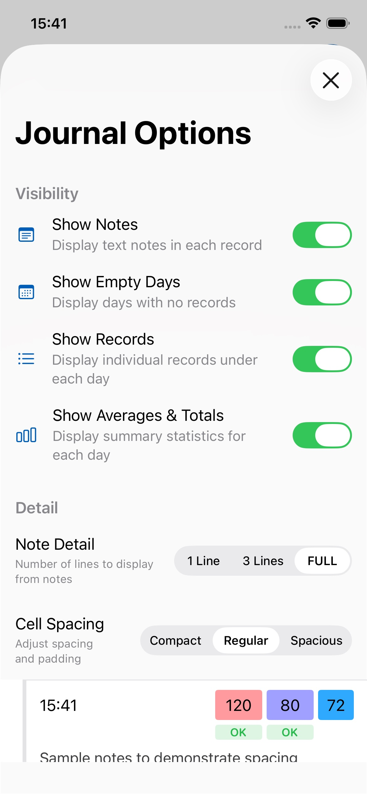
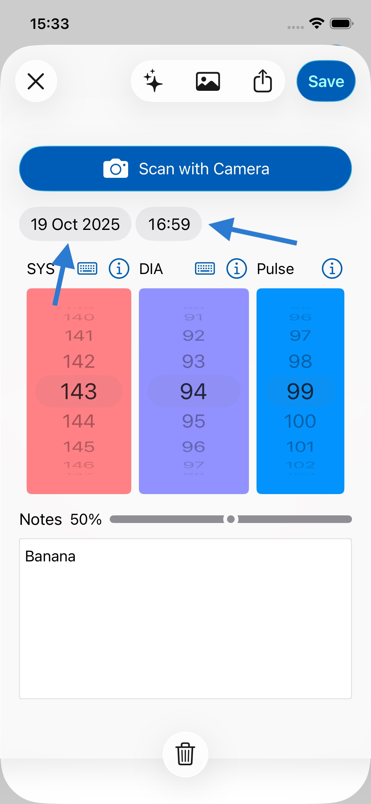

Sie können einen neuen Eintrag hinzufügen, indem Sie entweder 1. auf den Tag tippen oder 2. auf + oben rechts tippen. Beide Optionen werden Ihnen durch die Pfeile im Bild unten gezeigt.
Ja. Sie können viele Einträge pro Tag hinzufügen, wie oben gezeigt. Tippen Sie einfach erneut auf den Tag oder auf +, um dies zu tun.
Um einen Eintrag zu löschen, können Sie auf dem Eintrag nach links wischen und auf Löschen tippen, oder auf den Eintrag tippen, um ihn zu öffnen, und das Papierkorb-Symbol oben links auf dem Bildschirm drücken. Beide Methoden werden unten gezeigt:
 
Wenn Ihre Notizen 8 oder mehr Wörter enthalten, erscheint ein Emoji darüber, das die vorhergesagte Stimmung anzeigt. Diese Funktion kann Ihnen helfen zu verstehen, ob Ihr Text übermäßig negativ oder positiv wirkt, oder Sie daran erinnern, was funktioniert und was nicht, als Leitfaden für Ihr Schreiben. Die Stimmungsanalyse wird vollständig auf Ihrem Gerät mit Apples Natural Language API berechnet, sodass keine Daten Ihr Gerät verlassen und vollständige Privatsphäre gewährleistet ist. Wenn Sie möchten, können Sie diese Funktion in den Einstellungen unter Allgemein deaktivieren.
Wenn Sie auf Exportieren tippen (wie unten gezeigt), sehen Sie ein Freigabeblatt. Scrollen Sie dort nach unten und tippen Sie auf Drucken (wie unten gezeigt). Sie benötigen einen Apple AirPrint-kompatiblen kabellosen Drucker, um drahtlos von Ihrem iPhone oder iPad zu drucken.
Wenn Sie keinen AirPrint-kompatiblen kabellosen Drucker haben, können Sie einen hier kaufen.
Ja. Die App macht dies einfach. Tippen Sie auf die Teilen-Schaltfläche (wie unten gezeigt), wählen Sie PDF und dann Ihre Mail-App. Der PDF-Bericht wird an eine E-Mail angehängt, die Sie dann an Ihren Arzt senden können.

Sie können Durchschnittswerte und Summen in den Ansichtsoptionen ausblenden, wie unten gezeigt. Dann werden nur Ihre eingegebenen Werte angezeigt und keine Durchschnittswerte. Dies kann nützlich sein, wenn Sie die Durchschnittswerte/Summen zwischen Ihren eingegebenen Daten als verwirrend empfinden.

Ja. Folgen Sie den obigen Anweisungen, wählen Sie jedoch Excel oder CSV anstelle von PDF als Ausgabeformat. Speichern Sie die Datei dann entweder auf Ihrem Gerät oder senden Sie sie sich per E-Mail.
Das Excel-Format ist zuverlässiger, während CSV möglicherweise weiter kompatibel ist - beide sollten sich in Excel und ähnlicher Software wie Apple Numbers oder Google Sheets öffnen lassen.
Sie können sie per E-Mail an jeden senden, den Sie möchten. Sie möchten vielleicht Ihre Daten regelmäßig zur Aufbewahrung und Sicherung an sich selbst senden. Sie können die PDF- oder CSV-Datei auch auf Ihrem Gerät zur späteren Verwendung speichern.
Tippen Sie doppelt auf das Journal-Symbol in der Tab-Leiste am unteren Bildschirmrand.
Um Daten aus einem früheren Monat anzuzeigen (z. B. September-Daten, wenn Sie sich gerade im Oktober befinden):
Ihre Daten werden immer gespeichert und sind zugänglich - Sie können jederzeit zwischen Monaten navigieren, um Ihre historischen Aufzeichnungen einzusehen.
Wenn Sie Ihre Daten nach Überprüfung der Monatsansicht immer noch nicht sehen: Gehen Sie zu Einstellungen > Daten > Backups verwalten und suchen Sie nach Backups aus dem Monat, den Sie ansehen möchten (oder vom Anfang des Folgemonats). Wenn Sie ein Backup aus diesem Zeitraum finden, können Sie es wiederherstellen, um Ihre Daten zurückzubekommen. Dies kann helfen, wenn Sie die App neu installiert haben oder wenn es ein Synchronisierungsproblem gab.
Öffnen Sie einen Eintrag und tippen Sie einfach auf die Uhrzeit oder das Datum, um sie zu ändern, wie unten gezeigt.

Ihre Daten werden verschlüsselt auf Ihrem Gerät gespeichert. Das bedeutet, dass selbst wenn Ihr Gerät gestohlen wird, niemand darauf zugreifen kann.
Auf Ihrem Gerät und in iCloud. Diese App verwendet dieselbe Technologie wie Apple Notizen und Fotos, um Ihre Daten geräteübergreifend zu speichern und zu synchronisieren, was bedeutet, dass sie sehr zuverlässig und sicher ist.
Nein. Die Daten befinden sich ausschließlich auf Ihrem Gerät und in iCloud, das auf von Apple verwalteten Servern läuft.
iCloud ermöglicht es, Ihre Daten zu sichern und zwischen Ihren Geräten zu synchronisieren. Wenn Sie Ihr Telefon verlieren oder ein neues bekommen, können Ihre Daten aus iCloud wiederhergestellt werden.
Ihre Daten sollten automatisch zwischen Ihren Geräten synchronisiert werden. Stellen Sie sicher, dass:

Ein Abonnement entfernt Werbung auf allen Geräten. Wenn Sie auf zusätzlichen Geräten Werbung sehen, gehen Sie zu Einstellungen > Werbung entfernen und tippen Sie auf Kauf wiederherstellen. Stellen Sie sicher, dass jedes Gerät mit demselben iCloud-Konto angemeldet ist.
Backups werden standardmäßig automatisch jede Woche erstellt (obwohl Sie dies in den Einstellungen deaktivieren können). Sie können auch manuelle Backups unter Einstellungen > Daten erstellen.
Es gibt keine Begrenzung für die Anzahl der erstellten Backups. Backups können Jahre zurückreichen und nehmen in der Regel sehr wenig Speicherplatz ein, sodass das Löschen keinen großen Unterschied für den Speicher Ihres Geräts macht. Wenn Sie Speicherplatz freigeben müssen, ist es besser, größere Dateien auf Ihrem Gerät wie Fotos und Videos zu löschen.
Derzeit werden Backups nicht über iCloud synchronisiert, aber Ihre aktuellen Daten schon. Das bedeutet, wenn Sie ein neues iPhone oder iPad bekommen, erscheinen dort auch Ihre aktuellen Daten, aber nicht Ihre Backups, da jedes Gerät seine eigenen lokalen Backups behält.
Das bedeutet zum Beispiel, wenn Sie einen Eintrag auf Ihrem iPhone löschen und er aus iCloud und Ihrem Telefon verschwunden ist, könnten Sie immer noch auf Ihr iPad gehen und von einem seiner älteren Backup-Snapshots wiederherstellen.
Nein. Sie können sie sofort verwenden, ohne sich anmelden oder registrieren zu müssen. Die App nutzt Ihr iCloud-Konto, um Ihre Daten automatisch mit anderen Geräten zu synchronisieren, unter Verwendung von Apples Infrastruktur. Das bedeutet, es ist schnell, zuverlässig und sicher.
Ja, und Ihre Daten werden automatisch zwischen ihnen synchronisiert, wenn Sie mit demselben iCloud-Konto angemeldet sind. Auf der iPad-Version haben Sie mehr Platz für Notizen und können mehr Einträge sehen.
Ja. Die App ist für Apple Silicon Macs (M1 und neuer) verfügbar. In der Mac-App können Sie das Fenster vergrößern, um mehr Daten auf größeren Bildschirmen zu sehen. Sie können die Mac-App hier auf Ihrem M1 oder neueren Mac herunterladen.
Wir freuen uns über Ihr Feedback. Schreiben Sie uns an feedback@feeltracker.com.
Ja. Gehen Sie zum Einstellungen-Tab und deaktivieren Sie den Schieberegler neben Soundeffekte aktivieren.
Trends hilft Ihnen zu erkennen, was Sie beschäftigt, warum und welche Auswirkungen es auf Sie hat. Scrollen Sie nach unten für mehr Details und einige Beispiele, wie Trends in Ihrer App funktioniert.
Damit Trends funktioniert, müssen Sie beim Speichern von Einträgen Notizen machen. Sie können dies bei jedem Eintrag im Notizfeld tun.
Dieser zeigt Ihnen derzeit alle Einträge zwischen 2 Daten und einen Durchschnitt/eine Summe in diesem Zeitraum. So können Sie einen Durchschnitt/eine Summe für jeden beliebigen Zeitraum erhalten.
Journal ist der Hauptbereich für Tagebuch/Protokoll, in dem Sie Daten eingeben und auf monatlicher/jährlicher/lebenslanger Basis mit Durchschnittswerten und Summen anzeigen können.
Trends hilft Ihnen, Muster in den Daten zu erkennen, die Sie im Journal aufzeichnen, damit Sie darauf reagieren können.
Statistik zeigt Ihnen Ihre Daten in chronologischer Reihenfolge (neuester Eintrag zuerst) ohne monatliche oder jährliche Gruppierung und ermöglicht es Ihnen, Durchschnittswerte und Summen zwischen zwei beliebigen Daten zu sehen.
Es ist überhaupt nicht nötig, sich abzumelden - das Gerät entlädt Apps/Ressourcen automatisch aus dem Speicher, wenn nötig.
Moderne iPhones und iPads haben viel energieeffizienten Speicher, sodass Apps lange im Speicher bleiben können, ohne negative Auswirkungen. Der Zugriff auf diesen Speicher ist sicher und bereits durch Face ID, Touch ID oder einen Passcode geschützt.
Wenn Sie eine App trotzdem schließen möchten (zum Beispiel wenn sie nicht mehr reagiert), können Sie Apples Anweisungen hier folgen.
Es ist auch nicht nötig, sich anzumelden, da die App Ihr iCloud-Konto verwendet und so bereits Daten geräteübergreifend synchronisieren/sichern kann, ähnlich wie die Fotos- und Notizen-App, ohne dass persönliche Identifikationsdaten geteilt werden müssen.
Ja. Sobald Sie die Seitentaste am Gerät drücken, um es wie gewohnt zu sperren, kann niemand auf Ihre App oder Daten zugreifen, solange es gesperrt ist.
Wir möchten, dass Sie die App zuerst ausprobieren und sehen, ob Sie sie nützlich finden, ohne Ablenkungen - das können Sie kostenlos tun, ohne Google-Werbung zu sehen. Nachdem Sie 7 Einträge gespeichert haben, sehen Sie möglicherweise einige Google-Anzeigen, die die App unterstützen und sie kostenlos halten.
Ja! Tippen Sie dazu auf die ❎-Schaltfläche auf dem Banner. Dadurch wird die Option zum Abonnieren für eine geringe Gebühr angezeigt. Solange Sie abonniert sind, sehen Sie keine Werbung.
Wir verstehen Sie. Diese angepassten nativen Anzeigen sind so gestaltet, dass sie sich in den Rest der App einfügen und trotzdem gut aussehen, ohne störend oder aufdringlich zu sein. Wir möchten, dass Sie die App genießen können, auch wenn Sie nicht bezahlen können. Vergessen Sie nicht, Ihren Freunden davon zu erzählen!
Eine kleine regelmäßige Abonnementgebühr macht die App einfacher auszuprobieren, ohne hohe Vorabkosten. Langfristig helfen Abonnement-Einnahmen uns, die App zu pflegen und die Entwicklung nützlicher neuer Funktionen zu finanzieren.
Wir sind auf gute Bewertungen angewiesen, um die App zu verbreiten und neue Funktionen zu entwickeln. Bitte hinterlassen Sie eine Bewertung über den Link für Ihre App:
Vielen Dank, dass Sie die App ausprobiert haben. Lassen Sie mich wissen, ob ich etwas besser machen kann unter gs@feeltracker.com und ich werde versuchen zu helfen. Oft werden Korrekturen und Verbesserungen basierend auf Benutzerfeedback am selben oder nächsten Tag in einem App-Update ausgeliefert.
Wenn Sie immer noch nicht zufrieden sind, können Sie Ihr Abonnement hier kündigen.
Nein, die App verbindet sich nicht direkt über Bluetooth mit Blutdruckmessgeräten. Stattdessen haben wir uns darauf konzentriert, die manuelle Eingabe durch KI-Kamerascanning-Technologie mühelos zu gestalten. Richten Sie einfach die Kamera Ihres iPhones auf das Display Ihres Messgeräts nach einer Messung, und die App liest die Werte automatisch ab. Dies funktioniert mit praktisch jedem Blutdruckmessgerät mit digitaler Anzeige, unabhängig von Marke oder Modell. Es ist kein Koppeln erforderlich, keine spezielle Gerätekompatibilität zu beachten, und es dauert nur Sekunden. Diese Funktion ist immer kostenlos und unbegrenzt.
Öffnen Sie nach Ihrer Blutdruckmessung die App und tippen Sie auf die "+"-Schaltfläche, dann wählen Sie "Mit Kamera scannen". Halten Sie Ihr Telefon ruhig etwa 15-30 cm vom Display Ihres Messgeräts entfernt und stellen Sie sicher, dass die Zahlen deutlich sichtbar und gut beleuchtet sind. Die App liest automatisch die systolischen, diastolischen und Pulswerte ab. Für beste Ergebnisse sorgen Sie für gute Beleuchtung und halten Sie Ihr Telefon beim Scannen ruhig. Dies funktioniert mit den meisten digitalen Messgeräten, einschließlich OMRON, Microlife und Beurer.
Dies wird normalerweise durch die Apple Health-Synchronisierungskonfiguration verursacht. Das häufigste Problem ist, dass nur Schreibberechtigungen für Apple Health aktiviert sind, aber keine Leseberechtigungen. Um dies zu beheben: Gehen Sie zu Einstellungen > Daten > Apple Health und stellen Sie sicher, dass SOWOHL Lese- ALS AUCH Schreibberechtigungen für Blutdruck und Herzfrequenz aktiviert sind - nicht nur Schreiben. Die App benötigt eine Leseberechtigung, um zu prüfen, ob eine Messung bereits vorhanden ist, bevor sie aus Health importiert wird.
Eine Tags-Funktion kommt in den nächsten Monaten, mit der Sie Messungen für mehrere Personen auf einem Gerät erfassen können. Sie können jeden Eintrag mit dem Namen einer Person versehen und dann individuelle Berichte für jedes Familienmitglied erstellen.
Stellen Sie zunächst sicher, dass Sie auf beiden Geräten mit demselben iCloud-Konto angemeldet sind. Gehen Sie zu Einstellungen > [Ihr Name] und überprüfen Sie die Apple-ID. Zweitens überprüfen Sie, ob iCloud Drive auf beiden Geräten aktiviert ist (Einstellungen > [Ihr Name] > iCloud > iCloud Drive). Ihre Daten werden automatisch über iCloud synchronisiert, benötigen aber eine Internetverbindung und können einige Minuten dauern. Versuchen Sie, die App auf jedem Gerät zu öffnen und nach unten zu ziehen, um zu aktualisieren.
Alle Kernfunktionen zur Aufzeichnung sind vollständig kostenlos: unbegrenzte Einträge, KI-Kamerascanning (immer kostenlos), alle Diagramme und Trends, Apple Health-Synchronisierung und PDF/CSV-Exporte. Das Abonnement bietet zusätzlich: Werbefreiheit für ein sauberes Erlebnis, erweiterter KI-Chat (100 Nutzungen pro Tag statt 10 kostenlos) und Zugang zu erweiterten KI-Funktionen. Alle zukünftigen Premium-Funktionen sind für Abonnenten enthalten.
MAP (Mittlerer Arterieller Druck) stellt den durchschnittlichen Druck in Ihren Arterien während eines Herzzyklus dar. Er wird automatisch für jede Messung berechnet. MAP ist besonders wichtig für LVAD-Patienten (Linksventrikuläres Herzunterstützungssystem) und andere mit bestimmten Herz-Kreislauf-Erkrankungen. Um die MAP-Anzeige zu aktivieren, gehen Sie zu Einstellungen > Blutdruck > Mittleren Arteriellen Druck (MAP) anzeigen. Anpassbare MAP-Bereiche kommen in Version 2.8.x.
Wenn Sie eine Notiz eingeben (wie "Morgenmessung - vor der Medikation"), tippen Sie auf die "Vorlage"-Schaltfläche unten links im Notizfeld und speichern Sie sie als Vorlage. Beim nächsten Mal, wenn Sie eine Messung eingeben, tippen Sie erneut auf "Vorlage" und wählen Sie aus Ihren gespeicherten Vorlagen - der Text wird sofort eingefügt. Dies ist ideal für wiederkehrende Notizen wie "Morgens - vor Medikation" oder "Abends - nach dem Abendessen".
Ihr Blutdruck sollte normalerweise zwischen 90-140 für den systolischen Wert und 60-90 für den diastolischen Wert liegen. Wenn er außerhalb dieses Bereichs liegt, sollten Sie einen Arzt aufsuchen.
Laut dem NHS liegt der ideale Blutdruck zwischen 90/60 mmHg und 120/80 mmHg. Dies kann jedoch je nach Geschlecht, Alter und anderen Variablen variieren. Daher ist es am besten, Ihren Hausarzt für eine genaue Beurteilung Ihres Blutdrucks basierend auf Ihren individuellen Umständen zu konsultieren.
Der Blutdruck wird mit einem digitalen Blutdruckmessgerät gemessen. Hier finden Sie Blutdruckmessgeräte, die hervorragend mit der Kamera-Scan-KI-Funktion funktionieren. Die App kann automatisch Werte von den meisten digitalen Messgeräten ablesen, einschließlich OMRON, Microlife und Beurer.
Mit Trends nimmt diese App Ihre Daten und Notizen und zeigt, welche Dinge Sie beeinflussen und wie. Zum Beispiel könnten Sie sehen, dass Sie letztes Jahr 20 Mal meditiert haben und dass Meditation Ihren Blutdruck senkt. Umgekehrt könnten Sie sehen, dass Sie jedes Mal, wenn Sie Bob treffen, streiten und er Ihren Blutdruck erhöht. Je mehr Sie Notizen verwenden, desto nützlicher kann Trends sein.
Zum Beispiel gehen Sie 10 Mal laufen. 5 Mal sinkt Ihr Blutdruck um 10 und die anderen Male sinkt er um 5. Trends zeigt, dass Laufen im Durchschnitt hilft, Ihren Blutdruck um etwa 7,5 Punkte zu senken.
Mit Trends nimmt diese App Ihre Daten und Notizen und zeigt, welche Dinge Sie beeinflussen und wie. Zum Beispiel könnten Sie sehen, dass Sie Jane letztes Jahr 20 Mal getroffen haben und dass Jane Sie im Durchschnitt sehr glücklich macht. Umgekehrt könnten Sie sehen, dass Sie jedes Mal, wenn Sie Bob treffen, streiten und er Sie unglücklich macht. Je mehr Sie Notizen verwenden, desto nützlicher kann Trends sein.
Zum Beispiel treffen Sie Jane 10 Mal. 5 Mal hat sie Sie sehr glücklich gemacht (+2) und 5 Mal hat sie Sie ziemlich glücklich gemacht (+1). Trends zeigt, dass Jane Sie im Durchschnitt recht (+1,5) glücklich macht.
Mit Trends nimmt diese App Ihre Daten und Notizen und zeigt, welche Wörter Sie am meisten beschäftigen. Zum Beispiel könnten Sie sehen, dass Sie ein Wort letztes Jahr 20 Mal verwendet haben. Umgekehrt könnten Sie sehen, dass Sie ein anderes Wort 50 Mal verwendet haben - viel häufiger. Je mehr Sie Notizen verwenden, desto nützlicher kann Trends sein.
Zum Beispiel schreiben Sie in Ihren Notizen 120 Mal über Jane, mehr als über Ihren Job, über den Sie 50 Mal schreiben. Trends zeigt in diesem Fall, dass Jane eindeutig das Hauptthema in Ihrem Kopf war.
Mit Trends nimmt diese App Ihre Daten und Notizen und zeigt, welche Dinge Sie beeinflussen und wie. Zum Beispiel könnten Sie sehen, dass Sie letzte Woche viel Kaffee getrunken haben und dass Sie deshalb weniger geschlafen haben. Umgekehrt könnten Sie sehen, dass Sie jedes Mal, wenn Sie Salat essen oder ins Fitnessstudio gehen, besser schlafen. Je mehr Sie Notizen verwenden, desto nützlicher kann Trends sein.
Zum Beispiel trinken Sie 10 Mal Kaffee. 5 Mal davon haben Sie 2 Stunden zu wenig geschlafen, und die anderen 5 Mal haben Sie 1 Stunde zu wenig geschlafen. Trends zeigt, dass Kaffeetrinken im Durchschnitt dazu führt, dass Sie 1,5 Stunden zu wenig schlafen.
Mit Trends nimmt diese App Ihre Daten und Notizen und zeigt, welche Dinge Sie beeinflussen und wie. Zum Beispiel könnten Sie sehen, dass Sie letztes Jahr 20 Mal Fast Food gegessen haben und dass Sie im Laufe der Zeit zunehmen, wenn Sie Fast Food essen. Umgekehrt könnten Sie sehen, dass Sie jedes Mal, wenn Sie Salat essen oder ins Fitnessstudio gehen, abnehmen. Je mehr Sie Notizen verwenden, desto nützlicher kann Trends sein.
Zum Beispiel essen Sie 10 Mal Donuts. 5 Mal steigt Ihr Gewicht um 0,1 kg. Die anderen 5 Mal steigt Ihr Gewicht um 0,3 kg. Trends zeigt, dass Donuts essen Ihr Gewicht im Durchschnitt um 0,2 kg erhöht.
Körperfett wird von speziell entwickelten Waagen gemessen, die neben dem Gewicht auch die Körperzusammensetzung messen. Hier ist ein Beispiel für eine solche Waage von Omron. Es gibt auch andere Optionen von anderen Marken - worauf Sie achten sollten, ist "Körperzusammensetzung" sowie Waage.
Beachten Sie auch, dass selbst wenn Sie nur das Gewicht eingeben, Sie dennoch einen BMI-Wert sehen (links neben dem Gewicht, farbcodiert), der einen allgemeinen Hinweis darauf gibt, ob Sie ein gesundes Gewicht haben (wobei grün gut und rot Übergewicht bedeutet).
Wenn Sie Fragen oder Anregungen haben, zögern Sie nicht, uns unter support@feeltracker.com zu kontaktieren.